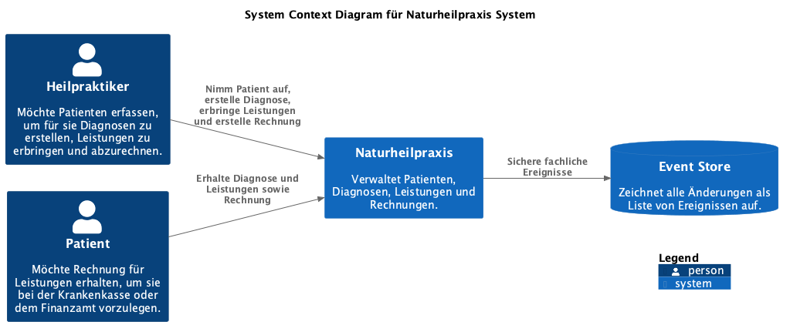
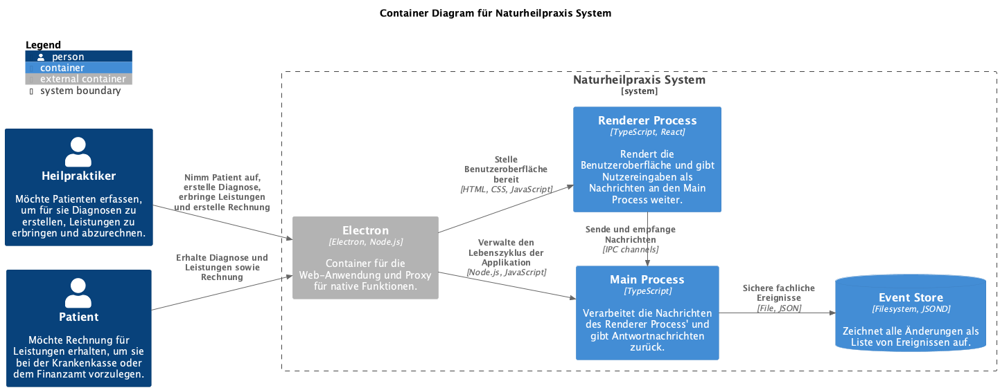

Value Proposition
Mit der App können Heilpraktiker Leistungen für Patienten erfassen, um ihnen diese in Rechnung stellen zu können.
Key Stakeholder
- Heilpraktiker
- Patient
Core Functions
- Nimm Patient auf
- Erstelle Diagnose
- Erbringe Leistung
- Aktualisiere Gebührenverzeichnis
- Erstelle Rechnung
- Rechne Leistungen ab
- Storniere Rechnung
- Gib Leistungen frei
- Patientenkarteikarte
- Diagnose
- Leistungen
- Gebührenverzeichnis
- Rechnung
Quality Requirements
- Orientiert an der Arbeitsweise des Heilpraktikers
- Mandantenfähigkeit: Mehre Praxen, gemeinsame Patienten
- Lauffähig unter macOS und Windows
Business Context
Core Decisions - Good or Bad
- Nutze Web-Technologien als Grundlage
- Sichere fachliche Ereignisse als Cloud Events in Event Store
- Sichere Konfiguration außerhalb des Event Stores
- Implementiere Hexagonale Architektur
- Nutze fertige Komponenten, um den Aufwand zu reduzieren
- Verwende ein ausgereiftes Komponenten-Framework
- Reduziere die Abhängigkeit von Frameworks und Bibliotheken von Dritten auf ein Minimum
Components / Modules
Technologies
- Electron
- React
- Bootstrap
- TypeScript
- Node.js LTS
- Vite
- Vitest, ESLint, Prettier
- Sheriff
- Build with make
Risks and Missing Information
- Wenig Erfahrung mit Electron
- Kann Electron die nativen Anforderungen erfüllen, z. B. Drucken